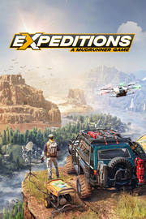

Expeditions: A MudRunner Game
Detalles
|  | |
| Tiempo de juego | No Jugado |
| Última actividad | Nunca |
| Añadido | 11/6/2024 14:41:31 |
| Modificado | 11/8/2024 17:33:39 |
| Estado de finalización | No Jugado |
| Librería | Playnite |
| Fuente | 6TB STORE |
| Plataforma | PC (Windows) |
| Fecha de lanzamiento | 3/5/2024 |
| Puntuación de la Comunidad | 52 |
| Puntuación de la Crítica | 80 |
| Puntuación de usuario | |
| Género | Aventura Carreras Simuladores |
| Desarrollador | Saber Interactive |
| Editor | Focus Entertainment |
| Característica | Cloud Saves Compat. Total Con Mando Cooperativo Cooperativo En Línea Logros De Multijugador Préstamo Familiar Un Jugador |
| Enlaces | Punto de encuentro Discusiones Guías Noticias Página de la tienda PCGamingWiki Logros |
| Tag | Ambientales Aventura Carreras Ciencia Conducción Construcción Construcción de bases Exploración Física Modificables Multijugador Mundo abierto Naturaleza Personalización de personajes Realistas Simulación Simulador de automóviles Todoterreno Transportes Un jugador |
Descripción


De Arizona a los Cárpatos, explora amplios mundos abiertos en busca de tesoros escondidos y ruinas olvidadas. Expeditions: A MudRunner Game es una innovadora simulación todoterreno de Saber Interactive, los creadores del éxito entre la crítica SnowRunner.
Lidera misiones de investigación al volante de una gran variedad de vehículos todoterreno, usa herramientas de alta tecnología y administra tu campamento y a tu personal para asegurar el éxito en medio de la nada. Embárcate en expediciones científicas gratificantes mientras te adaptas a los desafíos de la naturaleza y desentrañas los misterios de tierras ignotas.
Desvela los misterios de tierras inexploradas, tanto si vas solo al volante de tu vehículo como si llevas compañeros de viaje en el modo cooperativo en línea para hasta 4 jugadores.

Expeditions: A MudRunner Game se basa en el legado de las simulaciones todoterreno de Saber Interactive, con sus sistemas de juego avanzados basados en la física que emulan a la perfección la sensación de conducir por tierras salvajes. Tanto si llevas toda una vida con los juegos de MudRunner como si acabas de empezar, prepárate para una aventura científica apasionante.

En la previsión reside el éxito. Planifica tus misiones minuciosamente y contrata a un equipo de especialistas para mejorar tus habilidades sobre el terreno. Usa el dron y el detector de metales para explorar el itinerario y localizar puntos de interés. Invierte los beneficios de cada expedición en ampliar tus bases con estructuras de apoyo y consigue suministros útiles y vehículos nuevos.

Equipa tus vehículos con tecnologías y artilugios de última generación para asegurar el éxito en medio de la nada. Usa el cabrestante y las anclas portátiles para realizar maniobras complicadas y el ecómetro para atravesar los ríos traicioneros. Piensa bien tu estrategia, pues las herramientas disponibles pueden suponer el éxito o el fracaso de la expedición.
- Cabrestante: úsalo cuando tu vehículo se quede atascado en el lodo o para hacer rappel por los riscos.
- Gato de tijera: vuelve a colocar el vehículo en posición cuando se vuelque por accidente.
- Ecómetro: comprueba la profundidad del agua alrededor del vehículo para evitar que se hunda.
- Y mucho más…

Personaliza tus vehículos en el garaje. Puedes elegir entre ágiles vehículos de exploración, máquinas todoterreno o camiones grandes. Adapta tu enfoque para exploraciones rápidas y ligeras o vehículos con gran variedad de equipo. Superar con éxito las expediciones te permite invertir en nuevos accesorios, como más almacenamiento, repuestos y herramientas de medición.

Desde áridos desiertos y agrestes bosques hasta las montañas más escarpadas, explora vastas tierras ignotas llenas de maravillas ocultas y ruinas olvidadas. Encontrarás yacimientos arqueológicos, fósiles de dinosaurios y curiosidades de la naturaleza por doquier en Arizona y los Cárpatos, y cada descubrimiento puede ser la clave de avances científicos revolucionarios.